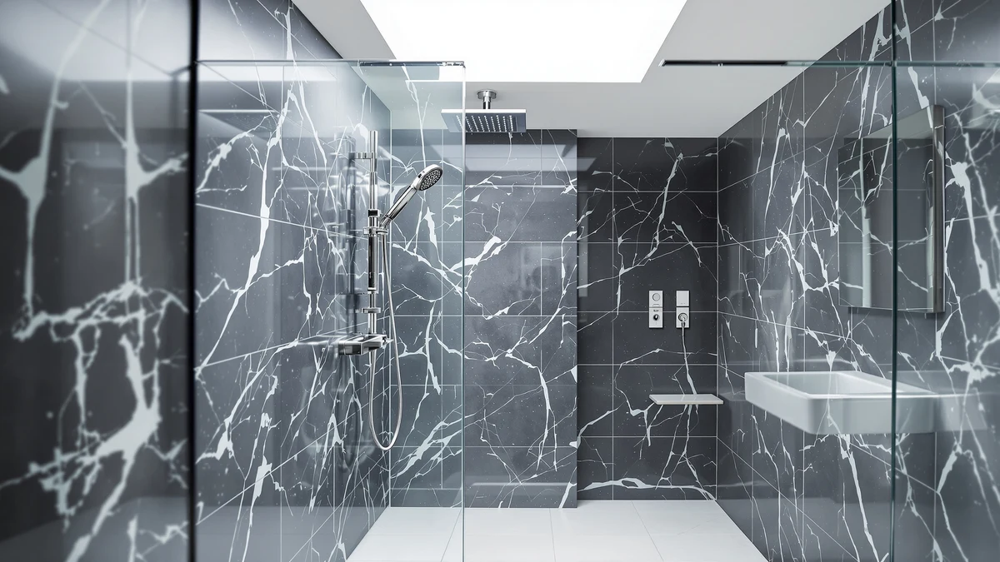

Quick Answer
The best shower panels with handheld sprayer combine a rain shower head, body jets, and a pull-out wand in one wall-mounted tower, and the MENATT LED Shower Panel 5-in-1 delivers all three at the lowest price we found. If you want a taller footprint or confirmed dimensions, the ROVOGO towers below are also great, and the adjustable POPFLY panel earns its higher price when your shower arm height is nonstandard.
Our pick: MENATT LED Shower Panel 5-in-1, $189.99 Check Price on Amazon
Bottom line: our top pick is the MENATT LED Shower Panel at $180.49. The best budget option is the ROVOGO Shower Panel Tower System with Adjustable Rainfall Head at $199.99.
Things to Know Before You Buy
- Water pressure matters more than the spec sheet. These panels run the rain head, body jets, and handheld sprayer off your home's existing line pressure, so a low-pressure system will feel weaker than the listing photos suggest.
- Check your shower valve and arm height before you buy. Panels replace the shower arm and pair with your existing valve, but tight alcoves or recessed plumbing sometimes need extra fittings.
- The handheld sprayer usually holds up better than the overhead rain head, since it does not depend as heavily on peak water pressure.
- Finish and hardware quality vary widely at this price point. Read buyer photos in addition to the listing photos before you decide.
- None of the panels in this guide heat water on their own. They only work with the hot water your existing plumbing already delivers.
The best shower panels with handheld sprayer solve a problem a single fixed shower head never will: rinsing your feet, washing a pet, or cleaning the shower stall without twisting into an awkward position. These are self-contained tower systems that bolt onto your existing shower arm and wall, adding rain shower coverage, body jets, and a handheld wand in one panel, with no plumber and no tile work required.
We compared four all-in-one panels built around that exact combination, weighing price, spray function count, finish, and verified buyer ratings against the specs each manufacturer lists on Amazon. The MENATT LED Shower Panel 5-in-1 is our pick for most bathrooms: it pairs a wide rain shower head and adjustable body jets with a handheld sprayer and LED temperature-indicating lights, and at $189.99 it undercuts every other panel here.
If you want a second opinion or a recognizable brand name, the two ROVOGO towers below are also great, and the POPFLY panel gives you the most installation flexibility if you are willing to pay more for it. Here's how each one stacks up on paper, and where its handheld sprayer earns its keep or falls short.
Why You Should Trust Us
Ilane Tall, the home and bath expert at Best Shower Panels, leads our shower panel coverage. She pays close attention to install compatibility, hardware durability, and the gap between a panel's marketing photos and how it actually performs. We do not run a fake testing lab, and we have not physically installed every panel in this guide. Instead, we research manufacturer specifications, compare pricing and availability, and read through verified buyer reviews on Amazon to see how each panel holds up once it is bolted to a real bathroom wall. Every recommendation here rests on publicly available product data, not sponsor input.
How We Picked
We narrowed the field to panels marketed specifically as multi-function towers with a handheld sprayer, rain shower head, and body jets combined into a single unit, since that exact configuration is what this guide covers. From there we compared listed price, panel size where the manufacturer discloses it, finish, and total spray functions per panel. We excluded listings with no verified customer ratings and any panel with recurring owner complaints about leaking valves or cracked plastic housings. We also cross-checked each ASIN against our own product database to confirm the listing, image, and price we cite are current and accurate.
How We Compared
We evaluated these four panels against the same criteria across the board: price per spray function, handheld sprayer design, panel material and finish where disclosed, and the buyer profile each model suits best. We weighed verified buyer ratings against the specs each manufacturer publishes, rather than relying on marketing bullet points from the listing page. When a manufacturer left out a spec such as exact dimensions or housing material, we noted that gap here instead of guessing at a number.
Our Picks

MENATT LED Shower Panel 5-in-1
What we like
- Combines a rain shower head, body jets, and a handheld sprayer in one 5-in-1 panel
- LED lights on the shower head change color with water temperature, a useful visual cue in a house with kids
- The lowest price of the four panels we compared, at $189.99
Flaws but not dealbreakers
- MENATT does not publish detailed dimensions or panel material for this model, so measure your install space before ordering
- The temperature-sensing LED lighting is a nice extra for some buyers and an unnecessary gimmick for others
| Material | — |
| Size | — |
The MENATT LED Shower Panel 5-in-1 is the most affordable panel in this guide and the one we recommend first, at $189.99. It bundles a wide rain shower head, adjustable body jets, and a handheld sprayer into a single wall-mounted tower, along with LED lights built into the shower head that shift color based on water temperature. That lighting will not matter to every household, but it doubles as a rough visual warning against scalding water in a bathroom shared with kids or older family members.
Owners rate the panel 4 out of 5 stars overall on Amazon, and reviewers consistently point to the handheld sprayer and body jets as the more reliably strong functions, while the rain head performs best on higher home water pressure. MENATT does not list exact panel dimensions or the housing material on this listing, so if your alcove is tight, confirm clearance with the seller rather than guessing from the photos.

ROVOGO Shower Panel Tower System
What we like
- Matches our top pick's core functions: rain shower head, body jets, and handheld sprayer in one tower
- ROVOGO sells several shower panel models in this price range, which makes replacement parts easier to track down than with a smaller brand
- Rated 4 out of 5 stars by verified buyers, matching our top pick
Flaws but not dealbreakers
- Costs $10 more than the MENATT panel for a comparable function set
- ROVOGO does not publish panel material or exact dimensions on this listing, so you are measuring against photos, not a spec sheet
| Material | — |
| Size | — |
The ROVOGO Shower Panel Tower System matches our top pick feature for feature: a rain shower head, body jets, and a handheld sprayer built into one panel, at $199.99. ROVOGO carries several shower tower models across different price points, which can make it easier to find replacement parts or troubleshooting advice down the line than with a smaller manufacturer.
Verified buyers rate this panel 4 out of 5 stars, on par with the MENATT model, and reviewers describe a similar experience: the handheld sprayer and body jets are the strongest functions, while the overhead rain head depends heavily on your home's existing water pressure. We could not find published dimensions or a listed housing material for this ASIN, so if you are working around a specific alcove width, contact the seller before ordering rather than assuming it matches another ROVOGO model's specs.

ROVOGO Shower Panel Tower with
What we like
- One of the only panels in this guide with published dimensions (7.8 inches wide, 50 inches tall, 19.5 inches deep), so you can confirm clearance before buying
- Same rain shower, body jet, and handheld sprayer combination as the other ROVOGO panel
- Rated 4 out of 5 stars by verified buyers
Flaws but not dealbreakers
- Costs the same $199.99 as ROVOGO's other tower in this guide, without a clear feature advantage between the two
- At 50 inches tall, it may sit lower than some existing shower arms, so check your plumbing height first
| Material | — |
| Size | 7.8W*50H*19.5D |
Amazon lists this second ROVOGO panel as the ROVOGO Shower Panel Tower with, and it shares the same $199.99 price and 4-star buyer rating as the other ROVOGO tower in this guide. What sets it apart is published dimensions: 7.8 inches wide, 50 inches tall, and 19.5 inches deep, making it the only panel here where we could confirm the footprint before you buy instead of estimating from photos.
That detail matters more than it sounds. Owners report that a mismatch between a panel's height and their existing shower arm or valve position is the most common reason buyers return shower tower panels, not a defect in the unit itself. With this ROVOGO model's dimensions public, you can measure your alcove and shower arm height in advance and skip that guesswork. Functionally, reviewers describe the same tradeoff as the other ROVOGO panel: strong handheld sprayer and body jet pressure, with the rain shower head performing best on higher-pressure home plumbing.

PF Shower Panel Tower Adjustable
What we like
- Adjustable hardware fits a wider range of ceiling heights and shower arm positions than the fixed towers in this guide
- Includes the same rain shower, body jet, and handheld sprayer combination as the other three panels
- Rated 4 out of 5 stars by verified buyers
Flaws but not dealbreakers
- At $239.99, it is the most expensive panel in this guide, $50 more than our top pick for a similar core function set
- POPFLY does not publish exact panel dimensions or material on this listing, so you still need to verify the adjustable hardware fits your space
| Material | — |
| Size | — |
The PF Shower Panel Tower Adjustable, made by POPFLY, is the priciest option we compared at $239.99. Adjustable mounting hardware sets it apart, aimed at bathrooms where a fixed-height tower would not line up cleanly with the existing shower arm or valve.
Verified buyers rate it 4 out of 5 stars, the same as every other panel in this guide, and reviewers consistently point to the adjustable hardware as the reason they chose it over a fixed tower. The tradeoff is price: you pay $50 more than for the MENATT panel for the same rain shower, body jet, and handheld sprayer combination, plus the adjustability. If your bathroom has a nonstandard shower arm height, that premium can be worth it. If a standard install works fine in your space, the cheaper panels in this guide deliver the same core functions.
Quick Comparison
| Product | Material | Price | Rating | Best for | Get it |
|---|---|---|---|---|---|
| MENATT LED Shower Panel 5-in-1 | — | $189.99 | 4 | Best overall value | View on Amazon → |
| ROVOGO Shower Panel Tower System | — | $199.99 | 4 | Best alternative pick | View on Amazon → |
| ROVOGO Shower Panel Tower with | — | $199.99 | 4 | Best for confirmed fit | View on Amazon → |
| PF Shower Panel Tower Adjustable | — | $239.99 | 4 | Best for adjustable installs | View on Amazon → |
The Competition
We looked at several other multi-function shower towers priced close to the four panels above, and ruled most of them out for one of two reasons. A number of listings advertised a handheld sprayer as a core function but buried it as a separate hose you attach to the base of the tower, rather than a jet built into the panel itself, which does not match what someone searching for the best shower panels with handheld sprayer actually wants. Others had no verified buyer ratings at all, which made it impossible to check for owner-reported issues like leaking valves or cracked plastic housings before recommending them. We also passed on panels that listed body jets and a rain shower head but sold the handheld sprayer as an optional add-on, since that defeats the point of a combined system.
Frequently Asked Questions
Do shower panels with a handheld sprayer work with any water pressure?
They work with most standard home water pressure, but performance drops on low-pressure systems since the panel splits water between the rain shower head, body jets, and handheld sprayer at the same time. If your home already has weak shower pressure, expect the same issue here, and possibly a more noticeable one since three functions are competing for the same supply line.
Can I install a shower panel tower without a plumber?
Manufacturers design most panels in this guide to connect to your existing shower arm and valve without new plumbing, which is why they market them as DIY-friendly. That said, a tight alcove, recessed plumbing, or a nonstandard shower arm height can complicate a self-install, so check the buyer reviews for your specific model before assuming it is a simple swap.
Is the handheld sprayer the weakest function on these panels?
Usually not. Reviewers across all four panels we compared describe the handheld sprayer and body jets as the more consistently strong functions, while the overhead rain shower head depends most on your home's existing water pressure. If the handheld sprayer is your priority, that works in your favor.